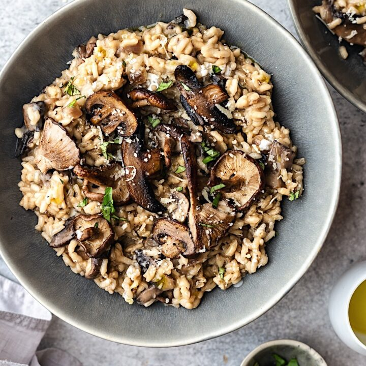

Mushroom Risotto

A good one to impress!
This recipe from allrecipes takes a bit of time, but it's well worth your patience and a perfectly good excuse to open a bottle of nice white wine. This is so good on its own, beefed up with mushrooms and some grated parm on top, or can accompany a nice piece of salmon, shrimp or meat of choice.
Ingredients
- 6 C chicken broth, or as needed
- 3 T olive oil, divided
- 1 pound portobello mushrooms, thinly sliced
- 1 pound white mushrooms, thinly sliced
- 2 medium shallots, diced
- 1 1/2 C Arborio rice
- 1/2 C dry white wine
- 4 T butter
- 3 T chives, finely chopped
- 1/3 C parmesan cheese, freshly grated
- salt & Pepper to taste
Directions
- Warm broth in a saucepan over low heat.
- Meanwhile, warm 2 tablespoons olive oil in a large saucepan over medium-high heat. Add portobello and white mushrooms; cook and stir until soft, about 3 minutes. Remove mushrooms and their liquid to a bowl; set aside.
- Add remaining 1 tablespoon olive oil to the saucepan. Stir in shallots and cook for 1 minute. Add rice; cook and stir until rice is coated with oil and pale, golden in color, about 2 minutes.
- Pour in wine, stirring constantly until wine is fully absorbed. Add 1/2 cup warm broth to the rice, and stir until the broth is absorbed. Continue adding broth, 1/2 cup at a time, stirring constantly, until the liquid is absorbed and the rice is tender, yet firm to the bite, about 15 to 20 minutes.
- Remove from heat. Stir in reserved mushrooms and their liquid, butter, chives, and Parmesan cheese. Season with salt and pepper and serve immediately.